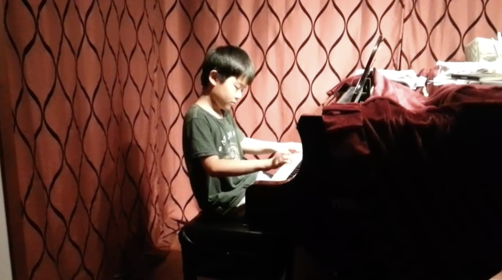
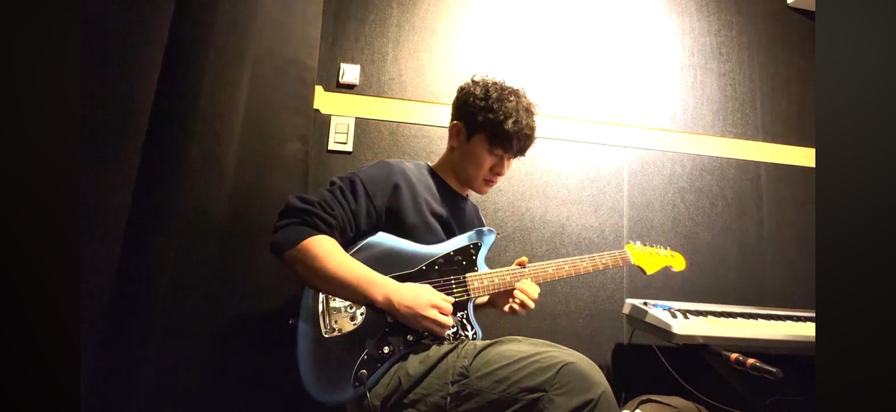

- DH's Music Journal(주)
- 대표자 : 김동현
- 주소 : 서울특별시 강동구 성내동 ~
- 전화 : 010-8319-3505, FAX : (02)123-1234
- copyright by DH's Music Journal Company All Rights Reserved.
Music Journal

어린이 시절
음악이 뭔지도 몰랐던 시절, 건반 하나하나를 두드리며 처음으로 ‘소리’라는 세계를 알게 되었습니다.
피아노는 제 첫 스승이자, 음악이라는 길의 출발점이었습니다.
Back when I didn’t even understand what music was,
I discovered the world of sound one key at a time. The piano was my very first teacher—the starting point of everything.
청소년 시절
청소년기에는 기타가 멋있어 보여 관심을 기울이고 통기타를 배웠습니다.
학교 끝나고 혼자 앉아 코드를 익히며, '나만의 음악'을 만드는 시작점이 되었습니다.
Now I play the electric guitar, chasing my own sound.
It’s no longer imitation—I can express my own tone and emotion.
These days, I'm truly drawn to creating music.

지금의 나
이제는 일렉기타를 잡고 연주를 시작합니다. 나만의 음악을 추구하며, 더 이상 흉내가 아닌
나만의 소리와 감정을 연주할 수 있게 되었습니다. 지금은 음악 만드는 것에 흥미를 느낍니다.
Now I play the electric guitar, pursuing a sound that’s truly mine.
I no longer imitate—I express my own feelings and style through every note.
Lately, I've found real excitement in creating music from scratch.
<우리에게 하는 한마디>
조금 더 천천히 가도 괜찮아
지금 여기에 집중하자
절대 포기하지 마
매일 한 단계씩 연습하자
잠시 음악과 함께 쉬어가자
지금의 너의 감정을 담아내